Next: Getting Started
Up: Multi-level Domain Decomposition Background
Previous: Multi-level Schwarz Preconditioners
Contents
Smoothed Aggregation
In order to define the restriction operator  , which is used to compute
the coarse-level matrix
, which is used to compute
the coarse-level matrix  , MLD2P4 uses the smoothed aggregation
algorithm described in [1,19].
The basic idea of this algorithm is to build a coarse set of vertices
, MLD2P4 uses the smoothed aggregation
algorithm described in [1,19].
The basic idea of this algorithm is to build a coarse set of vertices
 by suitably grouping the vertices of
by suitably grouping the vertices of  into disjoint subsets
(aggregates), and to define the coarse-to-fine space transfer operator 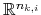 by
applying a suitable smoother to a simple piecewise constant
prolongation operator, to improve the quality of the coarse-space correction.
into disjoint subsets
(aggregates), and to define the coarse-to-fine space transfer operator 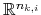 by
applying a suitable smoother to a simple piecewise constant
prolongation operator, to improve the quality of the coarse-space correction.
Three main steps can be identified in the smoothed aggregation procedure:
- coarsening of the vertex set , to obtain ;
- construction of the prolongator ;
- application of and to build .
To perform the coarsening step, we have implemented the aggregation algorithm sketched
in [4]. According to [19], a modification of
this algorithm has been actually considered,
in which each aggregate 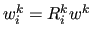 is made of vertices of that are strongly coupled
to a certain root vertex 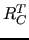, i.e.
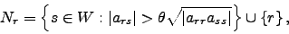
for a given
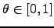.
Since this algorithm has a sequential nature, a decoupled version of
it has been chosen, where each processor 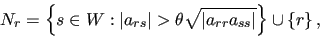 independently applies the algorithm to
the set of vertices 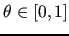 assigned to it in the initial data distribution. This
version is embarrassingly parallel, since it does not require any data communication.
On the other hand, it may produce non-uniform aggregates near boundary vertices,
i.e. near vertices adjacent to vertices in other processors, and is strongly
dependent on the number of processors and on the initial partitioning of the matrix  .
Nevertheless, this algorithm has been chosen for the implementation in MLD2P4,
since it has been shown to produce good results in practice
[3,4,18].
.
Nevertheless, this algorithm has been chosen for the implementation in MLD2P4,
since it has been shown to produce good results in practice
[3,4,18].
The prolongator 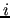 is built starting from a tentative prolongator
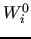, defined as
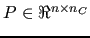 is obtained by
applying to 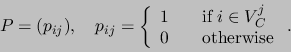 a smoother
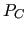:
in order to remove oscillatory components from the range of the prolongator
and hence to improve the convergence properties of the multi-level
Schwarz method [1,17].
A simple choice for 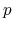 is the damped Jacobi smoother:
where the value of 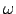 can be chosen
using some estimate of the spectral radius of 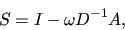 [1].
Next: Getting Started
Up: Multi-level Domain Decomposition Background
Previous: Multi-level Schwarz Preconditioners
Contents
Salvatore Filippone
2008-07-22